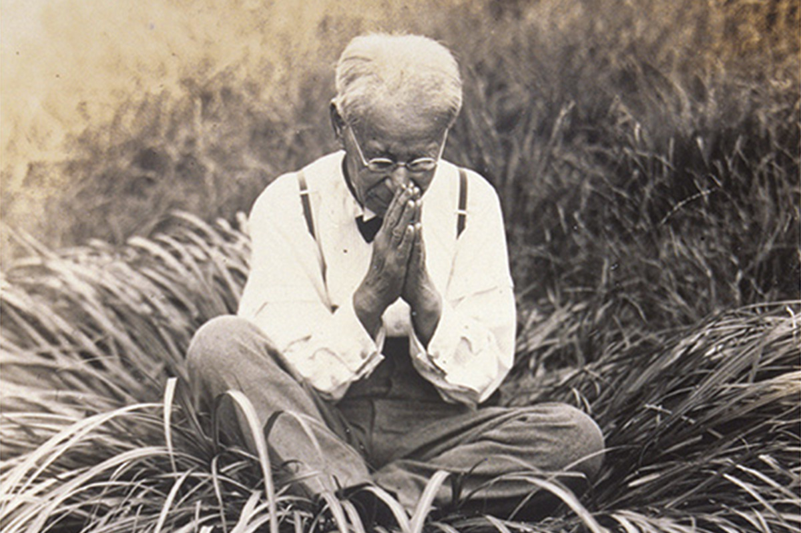
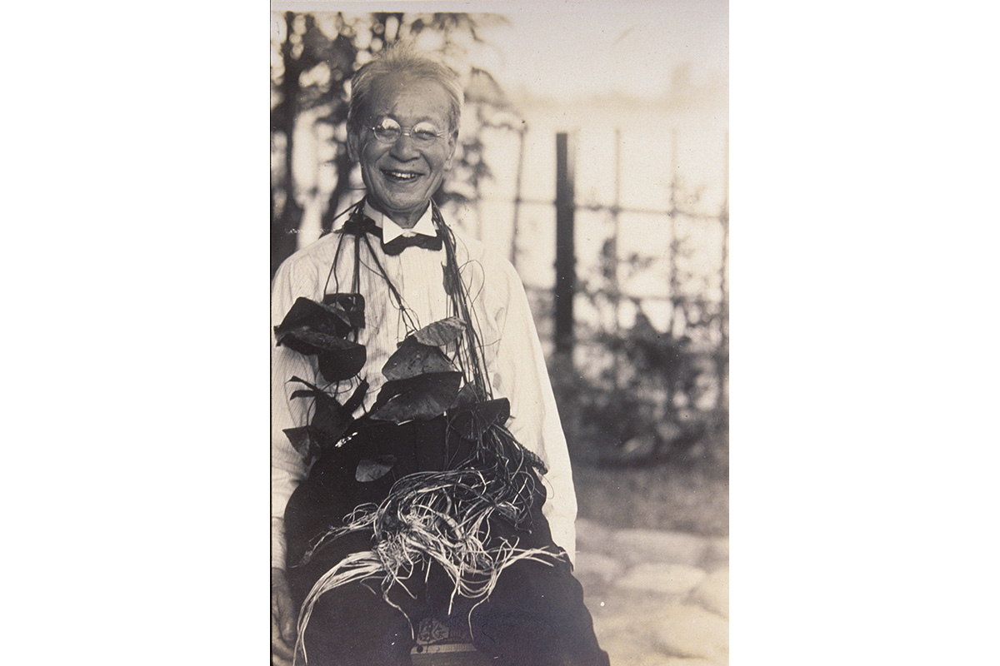
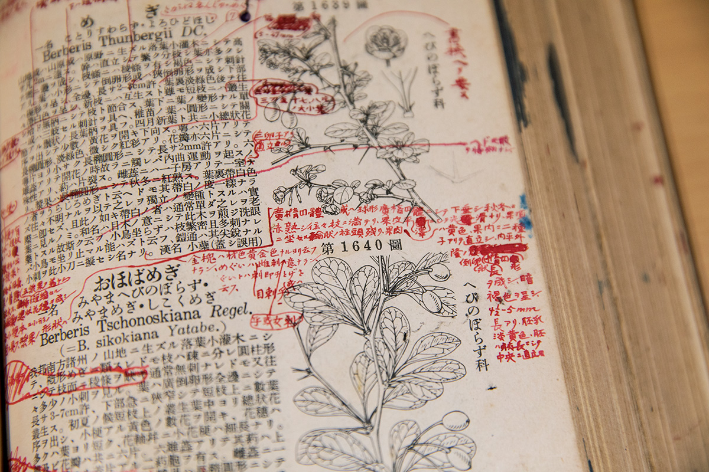
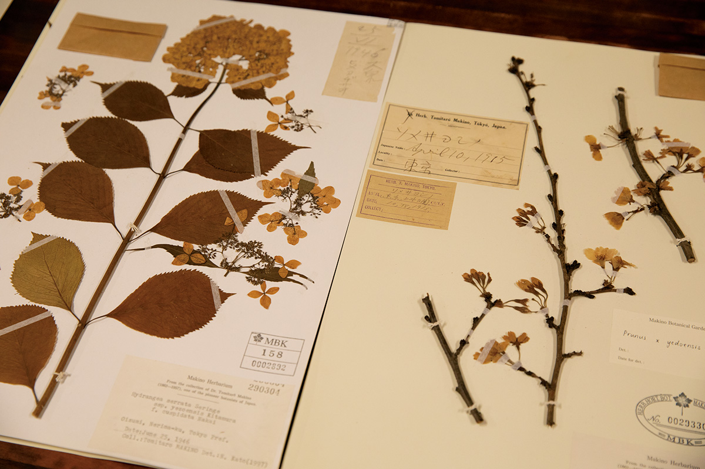
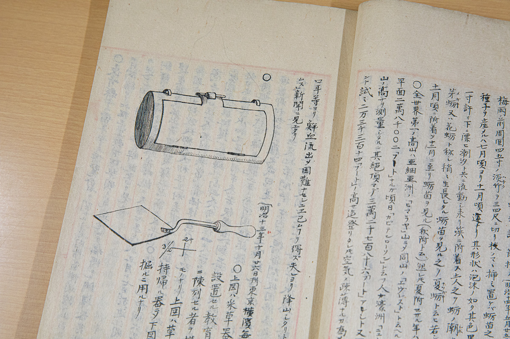
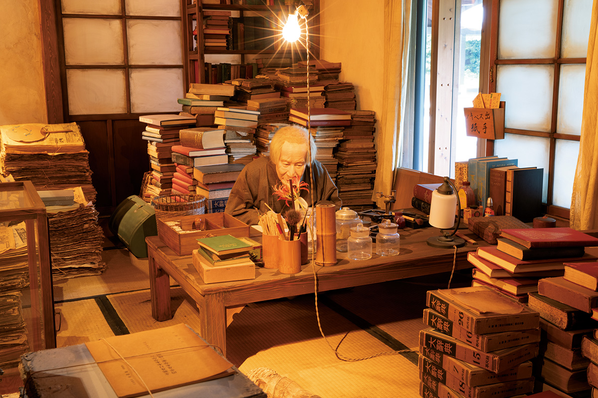
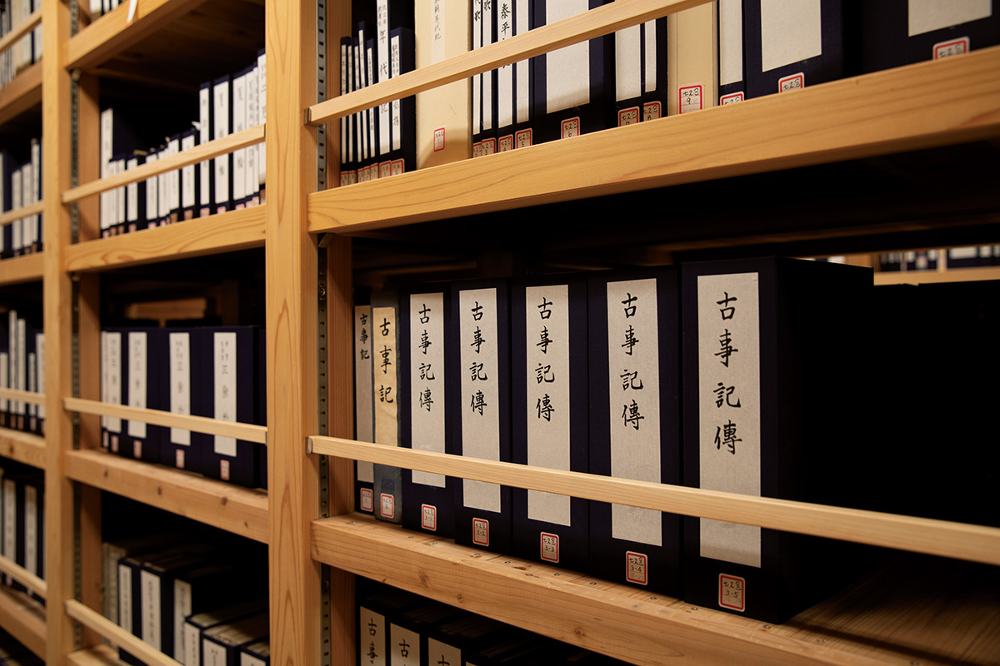
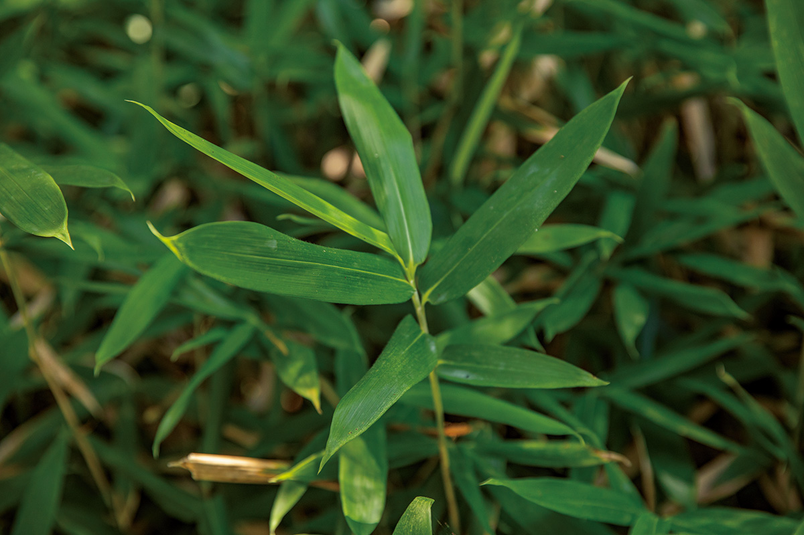
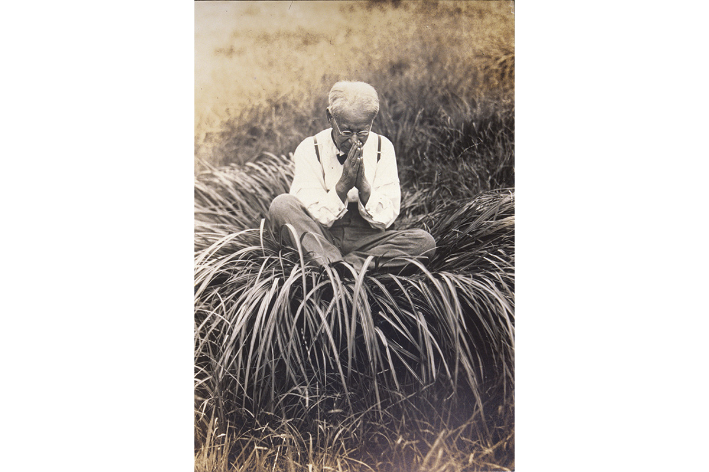

Префектура Коти · Сагава · человек
Томитаро Макино: человек, который знал все растения Японии

Его называют отцом японской ботаники. Он бросил школу, но дал имена полутора тысячам растений, а за спиной у него стояла жена, которая почти тридцать раз переезжала с ним по съёмным квартирам.
Характер
Сад, который и есть сам Макино
Директор ботанического сада Макино, по образованию фармацевт, говорит о нём прямо: «Макино был харизмой». По его словам, фармакология ищет лекарства в природе, но без классификатора это невозможно. «Классификация дело кропотливое и незаметное, однако важное. Макино это любил. И ещё у него был талант рисовальщика».

Жизнь
Самоучка, которого пустили в университет
Он ушёл из начальной школы и учился сам. В 22 года ему разрешили ходить в ботаническую лабораторию естественного факультета Токийского университета, и с этого началась настоящая наука. В 26 лет вышла его первая книга «Иллюстрированная флора Японии», а дальше одна за другой пошли другие работы о растениях.
Главным делом Макино считал работу в поле. В 27 лет он первым среди японцев описал новый вид растения и дал ему научное и японское названия, а затем принялся давать имена безымянным травам и деревьям. Он обследовал всю страну, кроме Окинавы, а также Тайвань и Китай. Себя он называл «духом растений» и всегда одевался в поле со вкусом, будто шёл на свидание.

Семья
Жена, которая в него верила
В 26 лет Макино женился на Суэ, и у них родилось тринадцать детей. Ради сборов он ездил по всей стране, собирал огромные библиотеки и выпускал книги за свой счёт. Расходы росли, временами он влезал в большие долги, и семья переезжала почти тридцать раз. Суэ самоотверженно поддерживала мужа.

«Пусть мой облик и кажется старческим, сердце моё всегда в разгаре цветения».
Томитаро Макино
В последние годы он с головой ушёл в любимые растения и умер в 94 года. «Ботанический сад это и есть Макино, говорит директор сада. Здесь можно узнать, каким человеком он был, и для начала просто порадоваться миру растений. Если среди посетителей вырастут второй и третий Томитаро, лучшего и желать нельзя».





Дело жизни
Что он успел
- Описал растения. Выявил и описал признаки множества неизвестных видов и дал названия более чем 1500 видам и разновидностям.
- Собрал больше 400 тысяч образцов. В поле он сам закладывал растения в газеты и сушил их, а гербарий позволял сравнивать виды в любое время и вести к новым открытиям.
- Придумал «ботанический рисунок Макино». Наблюдая множество экземпляров, он выводил средний облик вида и размещал на одном листе целое растение, части и анатомические разрезы.
- Основал научные издания. С товарищами он участвовал в создании научного издания о растениях, а позже сам выпускал «Ботанические исследования».
- Занимался просвещением. Учил собирать гербарий, читал лекции, издавал популярные книги; по стране возникали общества любителей растений, некоторые работают и сегодня.
- Создал определители. Используя знания из полевых поездок и свои рисунки, он издавал определители растений; работу над «Японским ботаническим определителем Макино» он вёл десять лет, и он стал основой японской ботанической литературы.
Где увидеть
Места, связанные с Макино
- Ботанический сад Макино (Коти, гора Годайсан): главное место его памяти, с музеем, гербарием и рисунками.
- Гора Ёкогура и музей природы «Ёкогураяма» (посёлок Оти): любимая гора учёного, куда он поднимался за редкими растениями.
- Дом-музей «Фурусато-кан» (Сагава, 1485): рассказывает о детстве и семье Макино на его родине.
- Парк Макино (Сагава, 2458): разбит на месте, где он мальчиком изучал растения, здесь ему поставлен памятник.
Фото: собрание ботанического сада Макино.